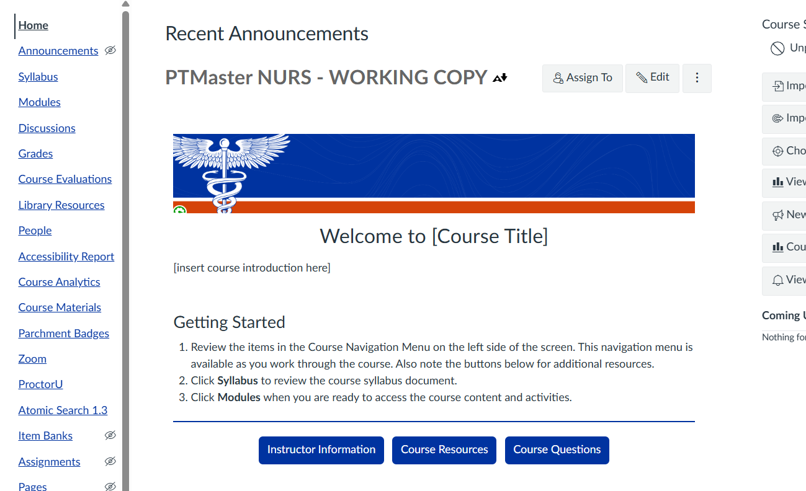
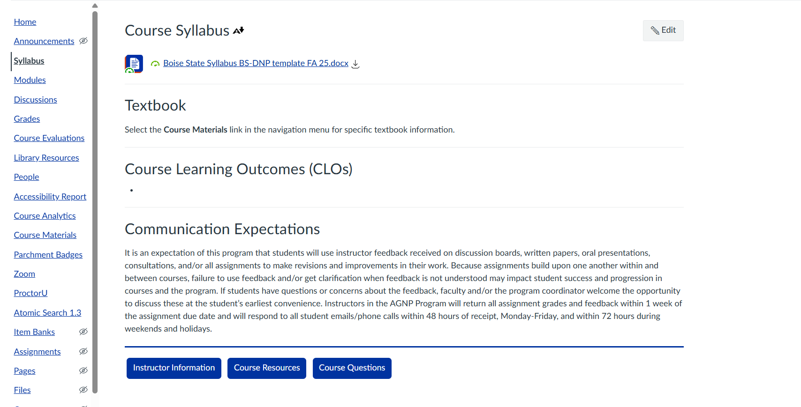
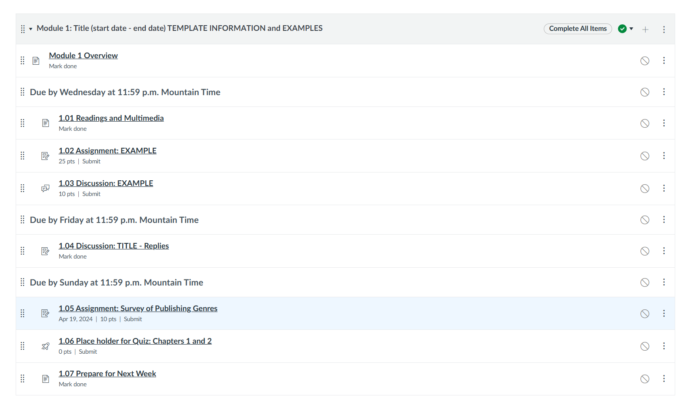
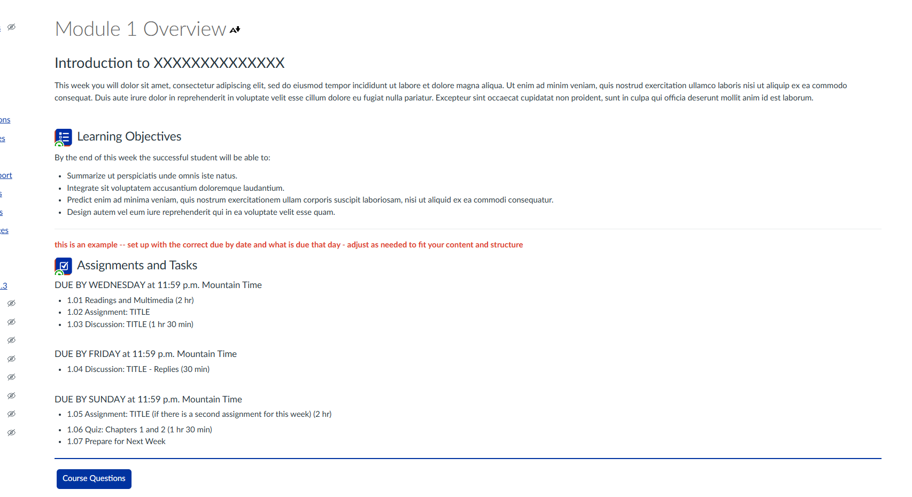
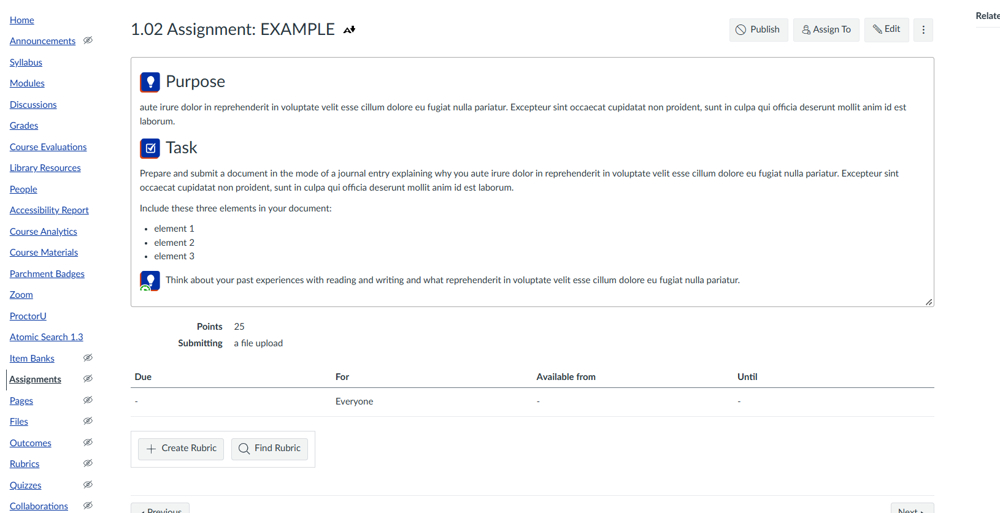

BS-DNP Online Course Template Redesign
One shared course design for the online BS-DNP program, so students only have to learn the layout once
I co-designed a new course template with eCampus and the program director, then worked with faculty to move 17 existing courses into it and build 10 new ones.
- Audience
- BS-DNP faculty and students
- Responsibilities
- Template design with eCampus and the program director, content migration with faculty, new course development in the template
- Tools
- Canvas LMS, course template
Context
The Boise State School of Nursing’s online BS-DNP program needed a new course template. I partnered with eCampus and the program director on the redesign, which has run for over a year.
Problem
The program’s existing courses had been built at different times, so they varied in layout and structure. A new template only helps if current courses move into it without losing content or disrupting faculty, and new courses have to be built in it from the start.
Approach
I worked with eCampus and the program director to shape the new template and align it with program needs. I then migrated existing course content into the template alongside faculty, so the subject experts stayed in control of their material. I also worked with instructors to develop new courses in the template from the beginning. The template gives every module an overview with learning objectives and time estimates, and gives every assignment the same Purpose and Task format, so students can plan their week and always know what an assignment is asking of them.
Artifact: BS-DNP Template Course Redesign Examples
Screenshots of the template with placeholder content, as faculty receive it before adding their material.
1 Course home page
Students start here: a welcome, three Getting Started steps, and buttons for Instructor Information, Course Resources, and Course Questions that repeat on later pages.

2 Syllabus page
The syllabus page links the program syllabus file and puts textbook information, course learning outcomes, and communication expectations in one place.

3 Module structure
Each module follows the same order, with items grouped by due date: Wednesday, Friday, and Sunday at 11:59 p.m. Mountain Time.

4 Module overview page
Every module opens with an overview: an introduction, learning objectives, and the week's tasks by due date with time estimates.

5 Assignment page
Assignments share the same Purpose and Task structure, so students see what they are doing and why.

Outcome
Seventeen existing courses have been migrated into the new template and ten courses completely from scratch have been built. The last two new courses launch Spring 2027.
Reflection
Students in a program move through many courses in sequence, and a shared template means they learn the layout once. It also gave faculty a shared starting point instead of a blank course so their time goes into teaching content.
More projects
- Standardizing AI Use Expectations in the School of NursingA shared system for communicating AI use at the assignment level
- Course Readiness for the School of NursingLaunching every nursing course, every semester
- Accessibility in Nursing Canvas CoursesReviewing and correcting course accessibility with faculty, and catching new issues before launch